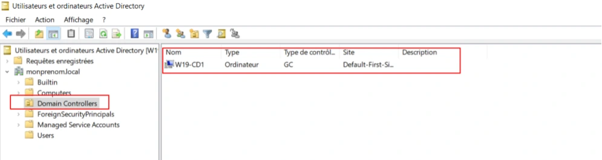
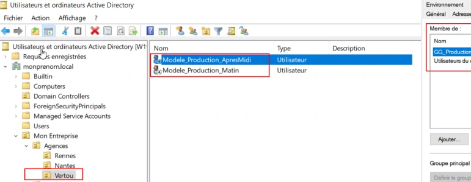
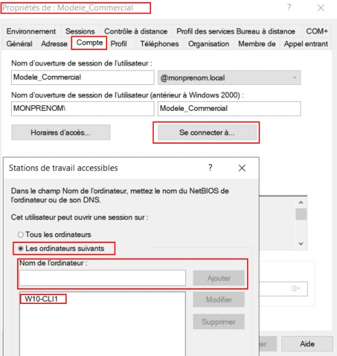
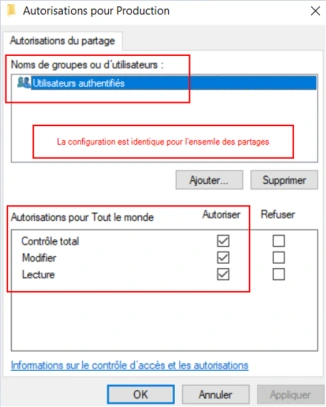
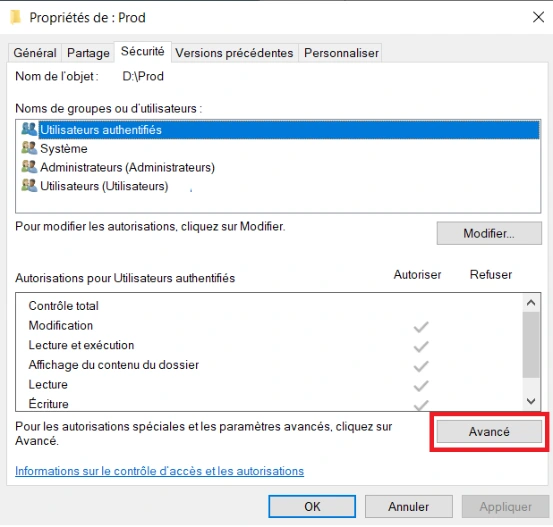
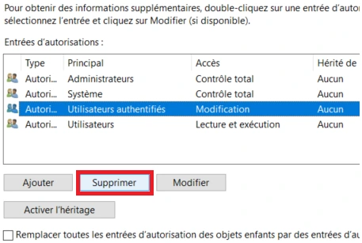
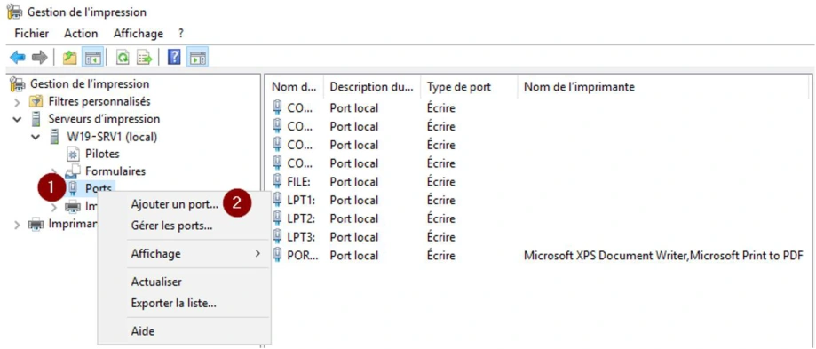
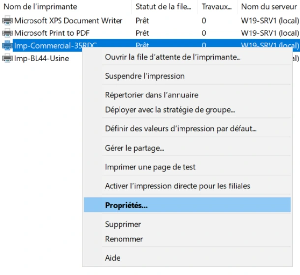
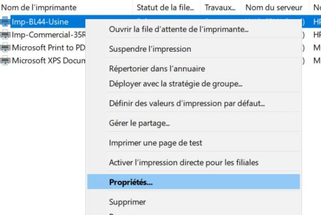

TP — Module 02 — Active Directory¶
La transcription du support Drive et l’aide pédagogique sont séparées pour rendre leur provenance explicite.
SOURCE DRIVE · TRANSCRIPTION DU SUPPORT
Le contenu des documents du dossier TSSR est transcrit ci-dessous, page par page. Les textes et tableaux sont intégrés à la page Web. Aucun fichier PDF, aucune diapositive entière ni aucune reproduction de page n’est affiché. Seuls des croquis ou visuels isolés et vérifiés peuvent accompagner la transcription. Les versions et les consignes restent celles des supports de formation. Les compléments IA sont conservés dans leur onglet distinct.
Énoncé · Enoncé du TP 1 - Mise en place d’un domaine Active Directory · 2 pages transcrites
Services réseau en environnement Microsoft Mise en place d’un domaine Active Directory
TP du Module 02 – Active Directory
Avant de démarrer ce TP, il convient d’avoir suivi les vidéos du module 2 et réalisé les TP précédents.
Durée estimée
30 minutes à 1 heure
Énoncé
Prérequis :
Disposer des machines virtuelles installées dans le TP 01 du module 01.
Création d’un contexte de domaine Active Directory :
Domaine Monprenom.local
W19-CD1 Contrôleur de domaine Serveur DNS
W10-CLI1 Client membre
W19-SRV1 Serveur membre
Analyse de différents cas d’ouverture de session :
Assurez-vous au préalable que les trois hôtes communiquent entre eux.
Pouvez-vous ouvrir une session avec un compte local sur W10-CLI1 ?
Oui Non
Pouvez-vous ouvrir une session avec un compte du domaine sur W10-CLI1 ?
Oui Non
Avec quel(s) compte(s) utilisateur(s) ?
Pouvez-vous ouvrir une session sur le contrôleur de domaine W19-CD1 ?
Oui Non
Avec quel(s) compte(s) utilisateur(s) ?
Dans quelle(s) console(s) et dans quel emplacement pouvez-vous visualiser les machines hôtes membres du domaine ?
Référence du document : 1B2gL9O4db8aZMg_jx_eaRnpWgikX7Ca6 · SHA-256 5d79597c7a5c0455…
Énoncé · Enoncé du TP 2 - Utilisateurs et groupes en contexte de domaine AD · 4 pages transcrites
Services réseau en environnement Microsoft Utilisateurs et groupes en contexte de domaine AD
TP du Module 02 – Active Directory
Avant de démarrer ce TP, il convient d’avoir suivi les vidéos du module 2 et réalisé les TP précédents.
Durée estimée
1 à 2 heures
Énoncé
Prérequis :
Avoir réalisé le TP précédent du Module 02.
Recherche d’objets dans l’annuaire : Utilisez les fonctions de recherche de l’AD pour contrôler si les comptes locaux existants existent toujours.
Si oui, où se trouvent-ils ?
Où se trouve le compte d’ordinateur W19-CD1 ?
Création de la structure de stockage des objets de l’annuaire :
Créez les unités d’organisation en vous basant sur les informations du tableau ci-dessous.
Création des modèles et comptes utilisateurs
Créez des modèles d’utilisateurs pour les services :
Les caractéristiques des comptes utilisateurs selon leur service d’appartenance sont indiquées ci-après :
Les utilisateurs du service Production
Leur tranche horaire est soit
- De 6h à 12h o De 13h à 21h Chaque collaborateur n’est affecté qu’à une tranche horaire Ils travaillent tous dans l’agence de Vertou Ils font partie du groupe Production
Les utilisateurs du service Informatique
Ils disposent de l’ensemble des privilèges à l’échelle du domaine (à l’exception de la secrétaire) Ils travaillent tous à l’agence de Nantes
Les utilisateurs du service Commercial
Ils ne pourront se connecter que sur les postes clients Windows 10 Ils travaillent tous dans l’agence de Rennes
| Type | Nom |
|---|---|
| Agence | Nantes |
| Agence | Vertou |
| Agence | Rennes |
| Services | Production |
| Services | Informatique |
| Services | Commercial |
| Fonction dans les services | Intérimaire |
| Fonction dans les services | Secrétaire |
| Ordinateurs | Serveurs Membres |
| Ordinateurs | Postes Clients |
En partant de vos nouveaux modèles :
Vous contrôlerez la bonne prise en compte des caractéristiques des comptes créés.
Dépendance aux services de domaine AD : 1. Arrêtez le service DNS du contrôleur de domaine. 2. Redémarrez le poste client puis effectuez les tests suivants.
Parvenez-vous à ouvrir une session sur le domaine avec l’utilisateur précédemment utilisé ?
Oui Non
Parvenez-vous à ouvrir une session sur le domaine avec un utilisateur qui n’a encore jamais utilisé W10-CLI1 ?
Oui Non
Après avoir relancé le service DNS, arrêtez le service Netlogon, quelle est la conséquence de cet arrêt ?
Pour rétablir la situation, relancez les services Services de domaine Active Directory.
| Service Informatique | Service Production | Service Commercial |
|---|---|---|
| Stéphane | Philippe | Camille (Secrétaire) |
| Sophie (Secrétaire) | Pascal | Claude |
| Samir | Paul | Corentin |
| mon prénom | Isabelle (Intérimaire) | Ines (Intérimaire) |
Cadre de réponse vide dans le support.
Référence du document : 1j7nol4DzNlXkWLqTBGGz04CO30fUiESh · SHA-256 a1e2b2f811ebf033…
Énoncé · Enoncé du TP 3 - L’accès aux ressources · 2 pages transcrites
Services réseau en environnement Microsoft L’accès aux ressources
TP du Module 02 – Active Directory
Avant de démarrer ce TP, il convient d’avoir suivi les vidéos du module 2 et réalisé les TP précédents.
Durée estimée
1 à 2 heures
Énoncé
Prérequis :
Avoir réalisé le TP précédent du Module 02.
Ajout et préparation d’un nouvel espace disque
Ajoutez deux disques de 10 Go chacun au serveur membre W19-SRV1.
Créez un volume en miroir de 5 Go au format NTFS.
Ce volume sera accessible via une lettre de lecteur et depuis C:\datasafe.
L’espace restant (de ces deux disques) sera accessible via le lecteur D:\.
Configuration de profils itinéraires :
Modifier le compte modèle du service Commercial afin que chaque utilisateur du service dispose d’un profil itinérant.
Ce profil sera stocké sur le serveur membre depuis C:\datasafe\users et accessible depuis un partage intitulé « Profils ». Les comptes existants sont-ils impactés par ces modifications ?
Oui Non
Sinon, apportez les modifications nécessaires.
Partage de ressources
Configurez le partage de ressources en respectant les contraintes indiquées
Le partage Production :
Accessible uniquement aux membres du service Production et aux administrateurs (ces derniers pourront tout y faire).
Le partage Applications :
Accessible en lecture à tous les membres de la société et en écriture aux membres du service Informatique. Les secrétaires n’auront aucun accès.
Le partage Prospects :
Accessible exclusivement aux Commerciaux.
Ajouter un partage Public qui donnera accès aux données se trouvant sur D:\ sur le serveur membre W19-SRV1. Ce partage sera accessible à tous en lecture.
| Nom du partage | Localisation sur W19-SRV1 |
|---|---|
| Production | C:\datasafe\prod |
| Applications | C:\datasafe\appli |
| Prospects | C:\datasafe\en_cours |
Référence du document : 1Guhv5Wx0z2snNuhB7a_7G9d0Mhsy9oW1 · SHA-256 d0c0de693174ca1c…
Énoncé · Enoncé du TP 4 - La gestion des impressions · 2 pages transcrites
Service Réseau en environnement Microsoft
La gestion des impressions
TP du Module 02 – Active Directory
Avant de démarrer ce TP, il convient d’avoir suivi les vidéos du module 2 et avoir réalisé les TP précédents.
Durée estimée
30 mn à 1 heure
Énoncé
Prérequis :
- Avoir réalisé le TP précédent du Module 02.
Mise en place du service d’impression
W19-SRV1 sera le serveur en charge de la gestion des imprimantes. Le fichier de pilote unique et universel est présent sur le partage distrib (lecteur R:) à l’endroit suivant : ‘Drivers\Drivers_imprimante_TSSR090_services_réseau_Microsoft’, il commence par upd-pcl6-x64-… Dans ce fichier compressé, le fichier d’installation “.inf” à utiliser est hpzipa23.inf Configuration d’imprimantes L’entreprise vient d'investir dans un périphérique d'impression réseau à destination du service commercial sur le site de Rennes. Le modèle est HP Color LaserJet M552. Réalisez les actions nécessaires sur le serveur afin de pouvoir mettre à disposition ce périphérique sur le réseau.
Adresse IP Nom imprimante Param. par défaut Qui peut imprimer ?
| Adresse IP | Nom imprimante | Paramètres par défaut | Qui peut imprimer ? |
|---|---|---|---|
| 172.28.10.46 | Imp-Commercial-35RDC | Recto/Verso | Service commercial |
Service Réseau en environnement Microsoft
Paramètres supplémentaires :
- Les administrateurs du domaine auront le contrôle total sur la gestion de ces imprimantes
- Les imprimantes seront publiées dans l’annuaire Active Directory La société possède un périphérique HP Laserjet 5 destinée à imprimer des bons de livraison/retrait pour le service production. Les livreurs doivent impérativement récupérer ceux-ci avant de quitter la plateforme logistique. L'imprimante actuelle ne suffit plus aujourd’hui pour suivre la cadence de l'usine. La direction a donc décidé d'investir dans deux nouveaux périphériques d'impression de modèle HP Color LaserJet Pro MFP M274 réunies au sein d’un « pool » d’imprimantes, permettant de paralléliser les travaux et donc de gagner du temps. Réalisez les actions nécessaires sur le serveur afin de mettre à disposition ces périphériques sur le réseau.
Paramètres supplémentaires :
- Les administrateurs du domaine auront le contrôle total sur la gestion de cette imprimante
- Les périphériques seront configurés dans un « pool » d’imprimantes
- L’imprimante sera publiée dans l’annuaire Active Directory Installation d’une imprimante sur un poste client
- Installer manuellement l’imprimante partagée IMP-Commercial-35RDC sur le poste client W10
- Tester l’impression avec un compte utilisateur membre du groupe G-Commercial
| Adresse IP | Nom imprimante | Qui peut imprimer ? |
|---|---|---|
| 172.28.10.90 et 172.28.10.91 | Imp-BL44-Usine | Service production |
Référence du document : 1KyYVZmcI_tJV4pARpiGdra87-XdxJ0iY · SHA-256 7228cf762389c665…
Correction · Solution du TP 1 - Mise en place d’un domaine Active Directory · 4 pages transcrites
Correction originale : à consulter après avoir tenté l’exercice.
Mise en place d’un domaine Active Directory
TP du Module 02 – Active Directory
Avant de démarrer ce TP, il convient d’avoir suivi les vidéos du module 2 et réalisé les TP précédents.
Durée estimée
30 minutes à 1 heure
Énoncé
Prérequis :
- Disposer des machines virtuelles installées dans le TP 01 du module 01.
Création d’un contexte de domaine Active Directory :
Domaine Monprenom.local
W19-CD1 Contrôleur de domaine Serveur DNS
W10-CLI1 Client membre
W19-SRV1 Serveur membre

Étapes illustrées dans le support
- Sélectionner le rôle Services AD DS, installer puis choisir Promouvoir ce serveur en contrôleur de domaine.
- Dans l’assistant, choisir Ajouter une nouvelle forêt et saisir monprenom.local.
- Vérifier les niveaux fonctionnels, DNS et catalogue global. Saisir le secret DSRM fourni par le formateur.
- Continuer après les options DNS, vérifier le nom NetBIOS MONPRENOM, exécuter le contrôle des prérequis et lancer Installer.
- Après redémarrage, la capture montre la connexion du compte MONPRENOM\Administrateur.
Sur W19-SRV1 et W10-CLI1 il est important d’avoir comme serveur DNS préféré l’adresse IP de W19-CD1
Analyse de différents cas d’ouverture de session :
Assurez-vous au préalable que les trois hôtes communiquent entre eux.
- Pouvez-vous ouvrir une session avec un compte local sur W10-CLI1 ?
Oui □ Non- Pouvez-vous ouvrir une session avec un compte du domaine sur W10-CLI1 ?
Oui □ Non- Avec quel(s) compte(s) utilisateur(s) ?
Avec le compte administrateur du domaine ou tout autre compte créé sur l’annuaire Active Directory et comptes locaux de W10-CLI.
- Pouvez-vous ouvrir une session sur le contrôleur de domaine W19-CD1 ?
Oui □ Non
- Avec quel(s) compte(s) utilisateur(s) ?
Avec le compte administrateur du domaine ou tout autre compte créé sur l’annuaire Active Directory.
- Dans quelle(s) console(s) et dans quel emplacement pouvez-vous visualiser les machines hôtes membres du domaine ?
Dans la console : Utilisateurs et ordinateurs Active Directory/Centre d’administration Active Directory.
Se déplacer dans le conteneur : Computers et Domain Controllers
Référence du document : 1n1rLGYHA1QDhSCuOR662ZOr5EyVmhPX4 · SHA-256 a8cb833f1835ce3a…
Correction · Solution du TP 2 - Utilisateurs et groupes en contexte de domaine AD · 7 pages transcrites
Correction originale : à consulter après avoir tenté l’exercice.
Utilisateurs et groupes en contexte de domaine AD
TP du Module 02 – Active Directory
Avant de démarrer ce TP, il convient d’avoir suivi les vidéos du module 2 et réalisé les TP précédents.
Durée estimée
1 à 2 heures
Prérequis :
- Avoir réalisé le TP précédent du Module 02.
Recherche d’objets dans l’annuaire : Utilisez les fonctions de recherche de l’AD pour contrôler si les comptes locaux existants existent toujours.
- Si oui, où se trouvent-ils ?
- Où se trouve le compte d’ordinateur W19-CD1 ?
Dans le conteneur Domain Controllers


Création de la structure de stockage des objets de l’annuaire :
Créez les unités d’organisation en vous basant sur les informations du tableau ci-dessous.
Attention, ceci est une solution, il en existe d’autres.
| Type | Nom |
|---|---|
| Agence | Nantes |
| Agence | Vertou |
| Agence | Rennes |
| Services | Production |
| Services | Informatique |
| Services | Commercial |
| Fonction dans les services | Intérimaire |
| Fonction dans les services | Secrétaire |
| Ordinateurs | Serveurs Membres |
| Ordinateurs | Postes Clients |
Création des modèles et comptes utilisateurs Créez des modèles d’utilisateurs pour les services :
- Informatique
- Production
- Commercial Les caractéristiques des comptes utilisateurs selon leur service d’appartenance sont indiquées ci-après : Les utilisateurs du service Production
- Leur tranche horaire est soit
- De 6h à 12h o De 13h à 21h • Chaque collaborateur n’est affecté qu’à une tranche horaire • Ils travaillent tous dans l’agence de Vertou • Ils font partie du groupe Production


Les utilisateurs du service Informatique
- Ils disposent de l’ensemble des privilèges à l’échelle du domaine (à l’exception de la secrétaire)
- Ils travaillent tous à l’agence de Nantes
Les utilisateurs du service Commercial
- Ils ne pourront se connecter que sur les postes clients Windows 10
- Ils travaillent tous dans l’agence de Rennes


En partant de vos nouveaux modèles :
Vous contrôlerez la bonne prise en compte des caractéristiques des comptes créés.
Dépendance aux services de domaine AD :
1. Arrêtez le service DNS du contrôleur de domaine.
2. Redémarrez le poste client puis effectuez les tests suivants.
•
Parvenez-vous à ouvrir une session sur le domaine avec l’utilisateur précédemment
utilisé ?
Oui □ Non•
Parvenez-vous à ouvrir une session sur le domaine avec un utilisateur qui n’a encore
jamais utilisé W10-CLI1 ?
□ Oui Non- Après avoir relancé le service DNS, arrêtez le service Netlogon, quelle est la conséquence de cet arrêt ?
Le service netlogon vérifie la bonne authentification des éléments actifs tentant de se connecter à l’AD.
Pour rétablir la situation, relancez les services Services de domaine Active Directory.
| Service Informatique | Service Production | Service Commercial |
|---|---|---|
| Stéphane | Philippe | Camille (Secrétaire) |
| Sophie (Secrétaire) | Pascal | Claude |
| Samir | Paul | Corentin |
| mon prénom | Isabelle (Intérimaire) | Ines (Intérimaire) |
Référence du document : 1nqj-gZDzZzzOwwhIz6Hj6YPc3TSV8hA5 · SHA-256 475f6b7792e58a39…
Correction · Solution du TP 3 - L'accès aux ressources · 10 pages transcrites
Correction originale : à consulter après avoir tenté l’exercice.
Service Réseau en environnement Microsoft
L’accès aux ressources
TP du Module 02 – Active Directory
Avant de démarrer ce TP, il convient d’avoir suivi les vidéos du module 2 et réalisé les TP précédents.
Durée estimée
1 à 2 heures
Énoncé
Prérequis :
- Avoir réalisé le TP précédent du Module 02.
Ajout et préparation d’un nouvel espace disque
- Ajoutez deux disques de 10 Go chacun au serveur membre W19-SRV1.
- Créez un volume en miroir de 5 Go au format NTFS.
- Ce volume sera accessible via une lettre de lecteur et depuis C:\datasafe.
- L’espace restant (de ces deux disques) sera accessible via le lecteur D:\.
Service Réseau en environnement Microsoft
Configuration de profils itinéraires :
- Modifier le compte modèle du service Commercial afin que chaque utilisateur du service dispose d’un profil itinérant.
- Ce profil sera stocké sur le serveur membre depuis C:\datasafe\users et accessible depuis un partage intitulé « Profils ».
Service Réseau en environnement Microsoft
•
Les comptes existants sont-ils impactés par ces modifications ?
□ Oui Non
Sinon, apportez les modifications nécessaires.Service Réseau en environnement Microsoft
Partage de ressources
Configurez le partage de ressources en respectant les contraintes indiquées
1°) Gestion des accès en respectant les préconisations AGDLP de Microsoft Sur le contrôleur de domaine, dans la console Utilisateurs et ordinateurs Active Directory :
- Création des Unités d’organisation pour classifier les groupes de ressources correctement :
- Création des groupes de domaine local 4 groupes de domaine local par ressource partagée : pour gérer les accès en lecture, en modification, en contrôle total et un groupe pour les refus d’accès. Il y aura donc 12 groupes de domaine local au total.
| Nom du partage | Localisation sur W19-SRV1 |
|---|---|
| Production | C:\datasafe\prod |
| Applications | C:\datasafe\appli |
| Prospects | C:\datasafe\en_cours |
Service Réseau en environnement Microsoft
Voici ce que cela donne pour la ressource Applications :
- Ensuite, selon les accès à octroyer, il s’agit de gérer les appartenances aux groupes de domaine local. Le partage Applications :
- Membre du groupe de domaine local DL_Applications_M : groupe GG_Informatique_Admin. Les administrateurs du service informatique auront ainsi les droits de modifier le contenu de la ressource Applications
- Membre du groupe de domaine local DL_Applications_L : groupe Utilisateurs du domaine
- Membre du groupe de domaine local DL_Applications_R : groupe GG_Secrétaires.
Service Réseau en environnement Microsoft
Les deux autres partages suivent la même logique Le partage Production :
- Accessible uniquement aux membres du service Production et aux administrateurs (ces derniers pourront tout y faire).
- Membre du groupe de domaine local DL_Production_M : groupe GG_Production
- Membre du groupe de domaine local DL_Applications_CT : groupe GG_Informatique_Admin. Le partage Prospects :
- Accessible exclusivement aux Commerciaux.
- Membre du groupe de domaine local DL_Prospects_M : groupe GG_Commercial
Service Réseau en environnement Microsoft
2°) Gestion des accès NTFS et partages réseau des dossiers
a-Création des partages avec autorisation en CT pour le groupe Utilisateurs
authentifiés Pour cela :
- Clic droit sur chacun des dossiers concernés, puis Propriétés
- Dans l’onglet Partage, choisir Partage avancé
- Définir les paramètres comme suit :


Service Réseau en environnement Microsoft
Faire exactement les mêmes manipulations dans l’onglet Partage sur chacun des dossiers.
Ajouter un partage Public qui donnera accès aux données se trouvant sur D:\ sur le serveur membre W19-SRV1. Ce partage sera accessible à tous en lecture. Il faudra respecter le même schéma que celui vu précédemment : Création de 4 groupes de domaine local et placement des bons groupes globaux.
Service Réseau en environnement Microsoft
b-Application des règles d’accès NTFS
La procédure qui suit vaut pour la ressource Production
- Dans l’onglet Sécurité du dossier Prod cliquer sur Avancé
- Puis cliquer sur Désactiver l’héritage
Et convertir les autorisations héritées en autorisations explicites
- Supprimer toutes les entrées mentionnant des groupes d’utilisateurs


Service Réseau en environnement Microsoft
- Puis ajouter les groupes de domaine local concernés (DL_Production_*), créés précédemment comme suit
Pour chaque DL, il conviendra d’appliquer les bons droits les uns après les autres.
DL_Production_CT => cocher la case Contrôle Total dans la colonne Autoriser
DL_Production_M => cocher la case Modification dans la colonne Autoriser
DL_Production_L => cocher la case Lecture et exécution dans la colonne Autoriser
DL_Production_R => cocher la case Contrôle Total dans la colonne Refus
Faire exactement les mêmes manipulations dans l’onglet Sécurité sur chacun des dossiers. Il ne reste plus qu’à tester les accès aux partages depuis un système client via les liens UNC.


Référence du document : 1ugnwkZO8QSxrU6er7gzre7jESsSr8ie7 · SHA-256 49d0d4bed7d42977…
Correction · Solution du TP 4 - La gestion des impressions · 22 pages transcrites
Correction originale : à consulter après avoir tenté l’exercice.
Service Réseau en environnement Microsoft
La gestion des impressions
TP du Module 02 – Active Directory
Avant de démarrer ce TP, il convient d’avoir suivi les vidéos du module 2 et réalisé les TP précédents.
Durée estimée
30 à 1 heure
Énoncé
Prérequis :
- Avoir réalisé le TP précédent du Module 02.
Mise en place du service d’impression
W19-SRV1 sera le serveur en charge de la gestion des imprimantes. Installation du rôle du serveur d’impression Depuis la console Gestionnaire de serveur de W19-SRV1, cliquer sur Gérer puis Ajouter des rôles et fonctionnalités et réaliser l’installation du rôle Services d’impression. Attendre la fin de l’installation du service (le redémarrage du serveur n’est pas nécessaire).
Service Réseau en environnement Microsoft
Une fois l’installation du rôle et des fonctionnalités associées effectuée, lancer la console Gestion de l’impression à partir du menu Outils dans la console Gestionnaire de serveur.
Configuration d’imprimantes L’entreprise vient d'investir dans un périphérique d'impression réseau à destination du service commercial sur le site de Rennes. Le modèle est HP Color LaserJet M552. Réalisez les actions nécessaires sur le serveur afin de pouvoir mettre à disposition ce périphérique.
Adresse IP Nom imprimante Param. par défaut Qui peut imprimer ?
Paramètres supplémentaires :
| Adresse IP | Nom imprimante | Paramètres par défaut | Qui peut imprimer ? |
|---|---|---|---|
| 172.28.10.46 | Imp-Commercial-35RDC | Recto/Verso | Service commercial |
Service Réseau en environnement Microsoft
- Les administrateurs du domaine auront le contrôle total sur la gestion de ces imprimantes
- Les imprimantes seront publiées dans l’annuaire Active Directory La société possède un périphérique HP Laserjet 5 destinée à imprimer des bons de livraison/retrait pour le service production. Les livreurs doivent impérativement récupérer ceux-ci avant de quitter la plateforme logistique. L'imprimante actuelle ne suffit plus aujourd’hui pour suivre la cadence de l'usine. La direction a donc décidé d'investir dans deux nouveaux périphériques d'impression de modèle HP Color LaserJet Pro MFP M274 Réalisez les actions nécessaires sur le serveur afin de mettre à disposition ces périphériques.
Paramètres supplémentaires :
- Les administrateurs du domaine auront le contrôle total sur la gestion de cette imprimante
- L’imprimante sera publiée dans l’annuaire Active Directory 1°) Copie des fichiers A partir de votre machine centre de formation, se rendre sur le partage distrib (lecteur R:) à l’endroit suivant : ‘Drivers\Drivers_imprimantes_TSSR090_Services_réseau_Microsoft’
| Adresse IP | Nom imprimante | Qui peut imprimer ? |
|---|---|---|
| 172.28.10.90 et 172.28.10.91 | Imp-BL44-Usine | Service production |
Service Réseau en environnement Microsoft
Copier/coller sur W19-SRV1 le fichier contenant le pilote universel d’imprimante HP nommé upd-pcl6-x64-….
2°) Extraction des pilotes Faire un clic droit sur le fichier de pilote et sélectionner Extraire tout…, puis choisir le dossier de votre choix
Un nouveau dossier apparait avec le contenu du fichier décompressé.
Service Réseau en environnement Microsoft
3°) Ajout des pilotes au serveur d’impression Dans la console Gestion de l’impression, se diriger dans la section Pilotes. Seuls les pilotes installés par défaut sont affichés pour le moment :
Faire un clic droit sur le noeud Pilotes puis sélectionner Ajouter un pilote. Une fenêtre d’assistant s’ouvre pour effectuer les paramétrages.
Service Réseau en environnement Microsoft
Dans le cas présent, seuls des pilotes x64 (64 bits) seront utilisés, ne pas cocher ARM64 ni x86.
Pour ajouter des pilotes complémentaires, cliquer sur Disque fourni.
Cliquer ensuite sur Parcourir pour accéder aux fichiers décompressés sur W19-SRV1 précédemment.
Service Réseau en environnement Microsoft
Dans la capture ci-dessous, les fichiers de pilotes ont été décompressés dans un dossier sur le bureau de l’utilisateur Administrateur. Sélectionner le fichier hpzipa23.inf comme indiqué dans la capture :
Confirmer en cliquant sur Ouvrir puis OK Le modèle de périphérique d’impression apparait, valider avec le bouton Suivant.
Service Réseau en environnement Microsoft
Le nouveau pilote est maintenant listé dans la console Gestion de l’impression.
Service Réseau en environnement Microsoft
Création des ports d’impression 4 ports d’impression doivent être créés. Faire un clic droit dans la console sur la section Ports puis sélectionner Ajouter un port.
Choisir le type de port Standard TCP/IP Port et cliquer sur Ajouter un port.


Service Réseau en environnement Microsoft
Renseigner dans la zone Nom ou adresse IP la première adresse IP (ici 172.28.10.46) Le Nom du port se complète automatiquement.
L’assistant tente de contacter l’imprimante sur l’adresse indiquée. Il faut attendre que le test se termine pour pouvoir poursuivre. Choisir ensuite le périphérique générique proposé et cliquer sur Suivant.
Service Réseau en environnement Microsoft
. Cliquer sur Terminer pour valider la fin du paramétrage.
Un port TCP/IP est maintenant créé et listé dans la console de gestion
Service Réseau en environnement Microsoft
Effectuer les mêmes opérations pour les ports restants (172.28.10.90 et 172.28.10.91) Cela doit donner finalement :
Création des imprimantes Il faut maintenant configurer les différentes imprimantes nécessaires sur le serveur. 2 imprimantes différentes seront créées pour correspondre aux « profils d’impression » demandés, IMP-Commercial-35RDC (HP Color Laserjet M552) Faire un clic droit sur la section Imprimantes puis sélectionner Ajouter une imprimante
Service Réseau en environnement Microsoft
Cocher Ajouter une nouvelle imprimante via un port existant et sélectionner le premier port TCP/IP créé (ici 172.28.10.46)
Sélectionner le pilote existant
Service Réseau en environnement Microsoft
Nommer l’imprimante et paramétrez-là comme suit :
Cliquez sur suivant dans chaque écran restant puis sur Terminer IMP-BL44-Usine (HP Color Laserjet Pro MFP M274) Procédez de la même façon pour le périphérique suivant
Service Réseau en environnement Microsoft
Ajoutez une imprimante, puis sélectionnez le port existant 172.28.10.90 (le 2ème port sera sélectionné plus tard) et le pilote installé précédemment.
Paramétrez l’imprimante comme suit :
Gestion des droits d’accès Il faut maintenant configurer les autorisations d’utiliser ou gérer ces imprimantes en respectant les préconisations AGDLP Pour la création des groupes de domaine local, veuillez vous reporter à l’atelier précédent relatif aux partages de fichiers. Vous devrez avoir créé les groupes de domaine local suivant :
Service Réseau en environnement Microsoft
Pour chacune des imprimantes, signification des groupes :
- GestDocuments => permet de gérer la file d’attente et les travaux qui y sont
- GestImprimante => permet de gérer l’imprimante (modifier autorisations d’accès, gérer les documents et imprimer)
- Imprimer => pas besoin de préciser…
Le groupe des administrateurs GG_Informatique_Admin sera membre des DL_*_GestImprimante Le groupe GG_Commercial sera membre du groupe DL_IMP-Commercial-35RDC_Imprimer Le groupe GG_Production sera membre du groupe DL_IMP-BL44-Usine_Imprimer IMP-Commercial-35RDC (HP Color Laserjet Pro MFP M274) Faire un clic droit sur l’imprimante IMP-Commercial-35RDC, puis Propriétés


Service Réseau en environnement Microsoft
Dans l’onglet Sécurité, ajoutez les bons groupes DL comme suit après avoir supprimé le groupe tout le monde :
Pour publier l’imprimante dans l’annuaire Active Directory, rendez-vous dans l’onglet Partage et cocher la case :
Service Réseau en environnement Microsoft
IMP-BL44-Usine (HP Color Laserjet Pro MFP M274) Faire un clic droit sur l’imprimante IMP-BL44-Usine, puis Propriétés
Dans l’onglet Sécurité, ajoutez les bons groupes DL comme suit après avoir supprimé le groupe tout le monde :


Service Réseau en environnement Microsoft
Pour publier l’imprimante dans l’annuaire Active Directory, cochez la case déjà abordée pour l’imprimante précédente (dans onglet Partage) Dernier point, pour associer l’imprimante IMP-BL44-Usine à deux adresses IP, il faut activer ce qui s’appelle un « pool » d’imprimantes. Pour ce faire, direction onglet Ports afin d’activer la case nécessaire permettant de cocher le 2ème port :
Installation d’une imprimante sur un poste client
- Installer manuellement l’imprimante partagée IMP-Commercial-35RDC sur le poste client W10
- Tester l’impression avec un compte utilisateur membre du groupe G-Commercial Ouvrir une session avec un compte administrateur sur le poste client pour installer l’imprimante. 1ère méthode Le moyen le plus simple pour installer une imprimante est de taper le chemin UNC dans le menu Exécuter :
Service Réseau en environnement Microsoft
Valider par OK, voici la présentation des partages disponibles où nous retrouvons les 2 imprimantes :
Un clic droit, puis sélectionner Connecter… pour déclencher l’installation de l’imprimante 2ème méthode Passer par le menu Démarrer -> Paramètres :
Puis cliquer sur ajouter une imprimante
Service Réseau en environnement Microsoft
Les imprimantes, si elles sont bien listées dans l’annuaire AD, doivent apparaitre.
Ne reste plus qu’à sélectionner l’imprimante souhaitée et cliquer sur Ajouter l’appareil
Fermer la session et rouvrez-là avec un compte du service commercial. Utilisez une application type bureautique ou retouche/affichage d’image et lancez une impression en utilisant l’imprimante installé précédemment. Le travail d’impression doit normalement apparaitre dans la file d’attente d’impression.
Service Réseau en environnement Microsoft
Référence du document : 1XxOE5N_ysgd-upRkGySwik9Zc4Bif4CI · SHA-256 8c998f003a98d4d6…
Complément IA / externe au cours — fiche pédagogique du portail
Cette fiche contient une reformulation et des aides d’apprentissage rédigées par IA. Elle est distincte de la transcription des documents du Drive et ne la remplace pas. Les schémas de synthèse de cette fiche sont des illustrations IA / externes au cours, sauf les captures explicitement attribuées à un document source.
Lire l’énoncé, réaliser l’exercice et noter les preuves obtenues avant d’ouvrir la correction. Les fiches de démonstration détaillent les manipulations qui servent au TP.